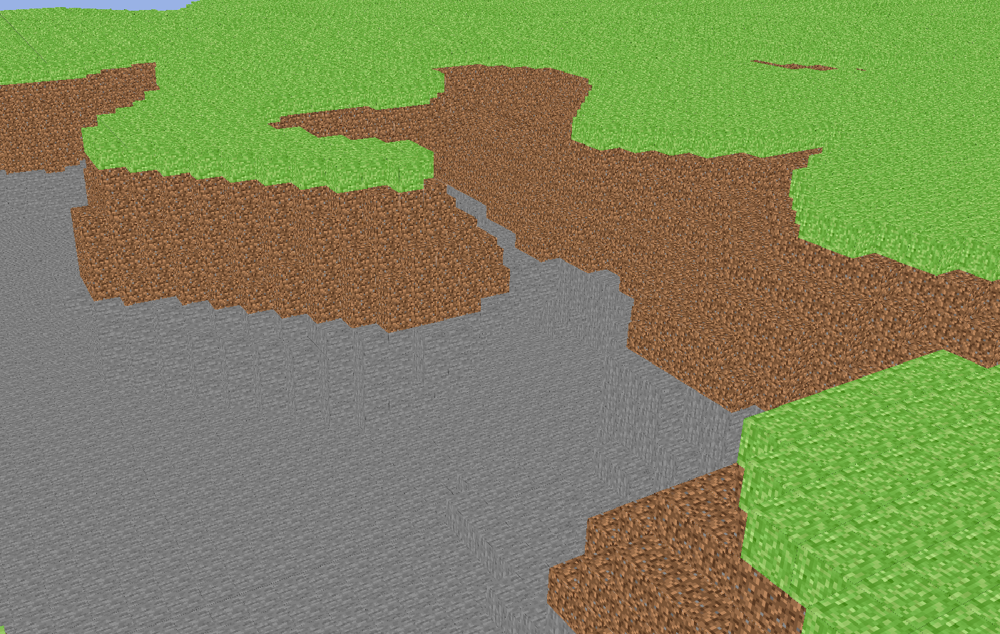
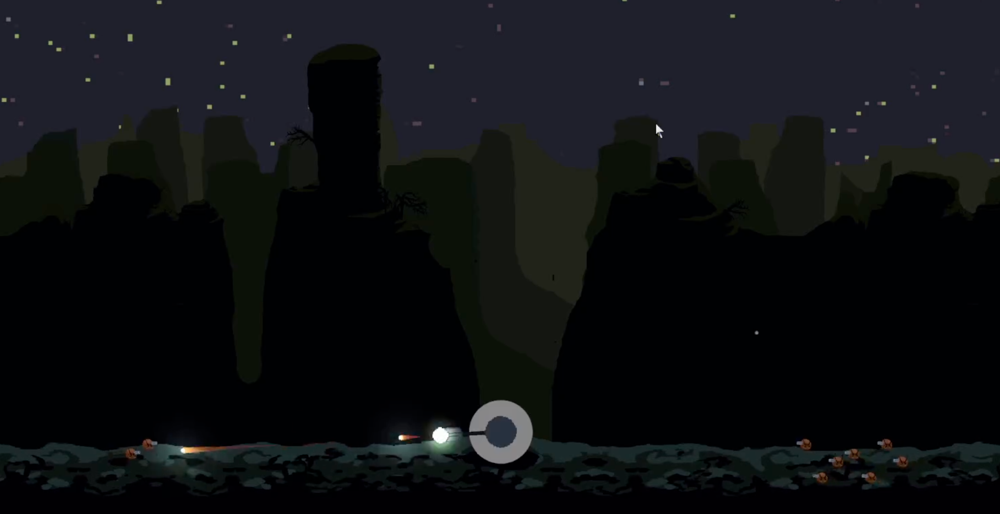
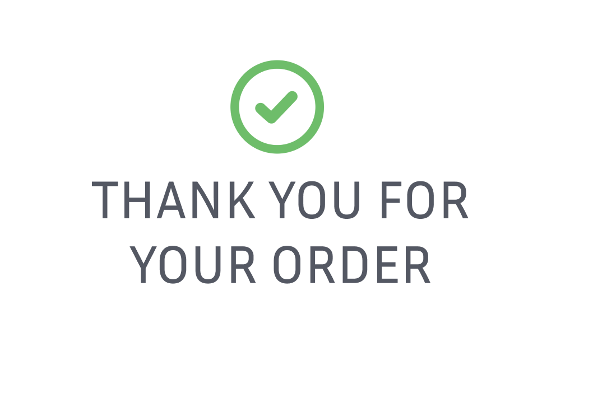
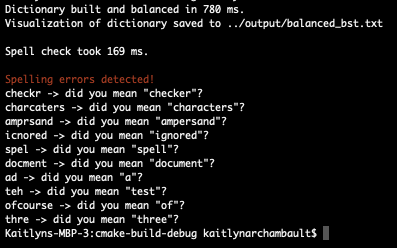
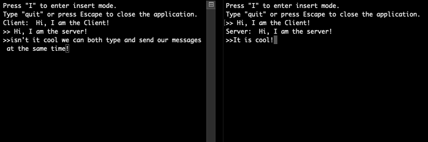
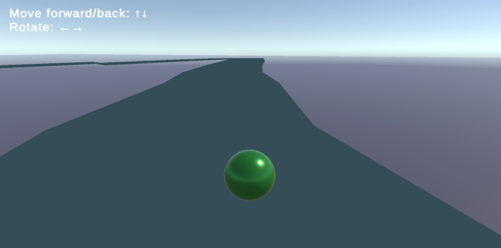
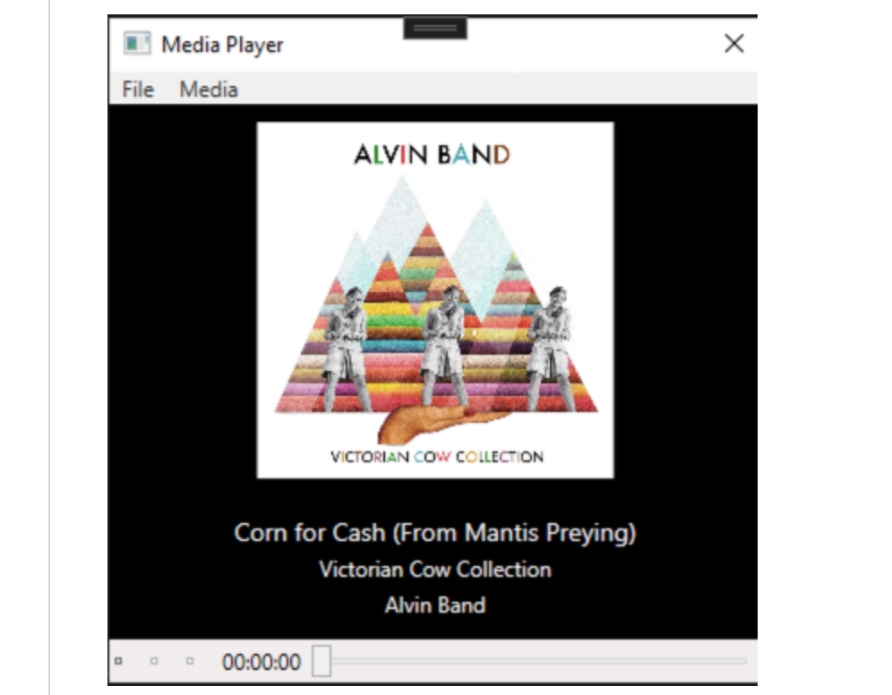

Ray Tracing in One Weekend
A Rust implementation of Peter Shirley's textbook by the same name.
Skills Learned: 3D graphics and ray tracing, mathematics for computer graphics, file I/O in Rust, C++ to Rust conversion.
Language(s): Rust.


RustWorld
A project for learning OpenGL and exploring procedural generation techniques, inspired by the style of "Minecraft".
Skills Learned: OpenGL API, shader programming, Perlin noise generation, 3D geometry, texture atlasing, camera control and movement.
Language(s): Rust, GLSL.

Rogue Planet
Stranded on a strange planet, you collect resources to repair your ship and repel waves of hostile native creatures.
Skills Learned: Unity, Teamwork, Game Development, Documentation and Communication, Version Control.
Language(s): C#.

Pizza Order App
An Android Studio application for pizza ordering. Allows users to choose between English and Dutch as the language preferences. These language selections, along with saved orders, persist across app sessions.
Skills Learned: SQLite, CRUD, wireframing, UI/UX, Android Development.
Language(s): Java, xaml.

Spell Checker
A terminal spell checking program that identifies misspelled words and offers suggestions.
Skills Learned: Binary search trees, tree balancing algorithms, edit distance algorithms.
Language(s): C++.

Eco Simulation
A 2D simulation based on Savitch's 'Doodlebugs', featuring a predator-prey dynamic with Humans and Zombies. The simulation ends upon reaching an extinction event, i.e. the absence of either predators or prey.
Skills Learned: Simulation and modeling, parameter tuning (reproduction rates, movement patterns, etc.), class design.
Language(s): C++.

Chat Program
Console client/server chat program for Advanced OOP in C# course.
Skills Learned: Socket programming, .Net, deadlock resolution.
Language(s): C#.

RaceTrack
An experiment with procedural generation and graphics in Unity, featuring a custom "road" mesh created through procedural generation. Not very polished, but it represents my initial attempts at these areas.
Skills Learned: Procedural generation techniques, Unity.
Language(s): C#.

Media Player
A basic WPF media player that allows for the editing and saving of MP3 metadata tags.
Skills Learned: WPF.
Language(s): C#.